| 日付 | 2021年2月28日（日） |
|---|---|
| 山域 | 高尾周辺 |
| メンバー | 家族（妻、長女・9歳、長男・7歳） |
| 山行形態 | 子連れ日帰り |
| アクセス | 車 |
| ルート (Map) | 高尾山薬王院祈祷殿駐車場 (7:57) - (8:14) 四辻 - (9:28) 草戸山 - (9:57) 榎窪山 - (10:52) 見晴台 - (11:10) 中沢山 - (11:45) 大洞山 (12:06) - (12:30) 大垂水峠 - (13:59) 稲荷山コース合流 - (14:55) 稲荷山コース入口 - (15:16) 高尾山薬王院祈祷殿駐車場 |
高尾山の南に、南高尾山稜と呼ばれるマイナーな尾根がある。
以前歩いたのは13年以上前。
今回は前回とは逆コースを歩き、復路は高尾山を経由する道を歩くことにする。
高尾山薬王院祈祷殿駐車場に車を停める。標高190m。
朝早く着いたと思ったが、それでもすでに結構車が停まっている。
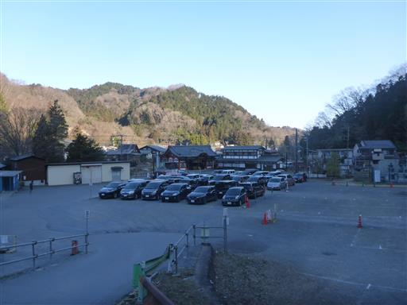
南高尾山稜に入る道は標識がなく少々わかりにくい。
最初は民家脇の細い通路を通過する。
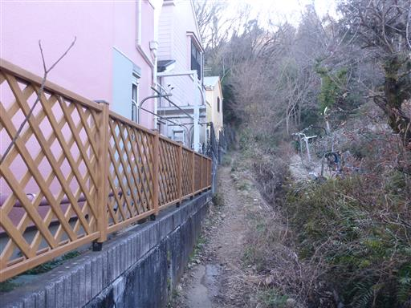
しばらく歩くと樹林帯の中の道になる。
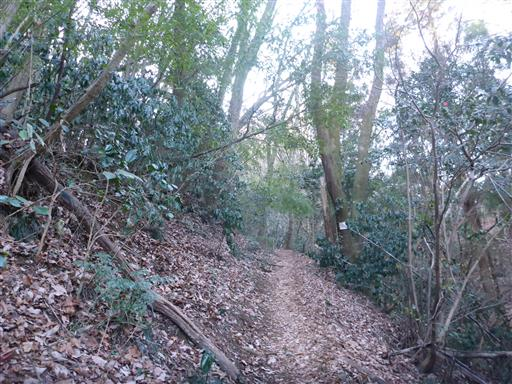
四辻に到着。ここから長い尾根道が始まる。
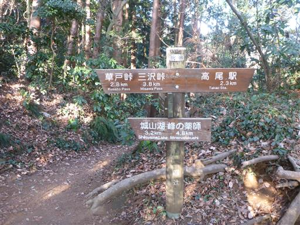
気持ちの良い登山道。道はよく整備されている。
歩いている人はそこそこいるが、高尾山に比べると静かだ。
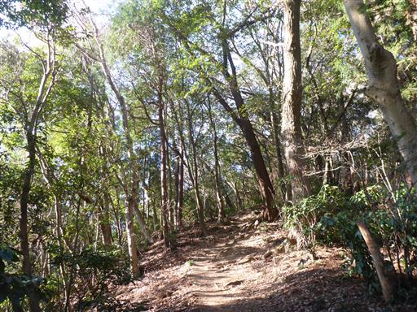
アオキの実があちらこちらにある。
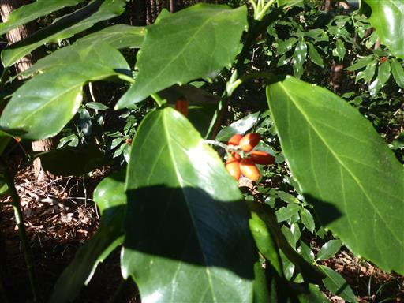
左側に防獣ネットが現れる。
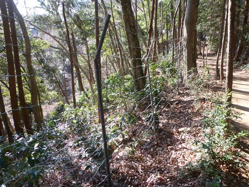
木を傷つけないように配慮されている。
こんな配慮がなされているのを始めて見た。
比較的新しいネットなのだろうか？
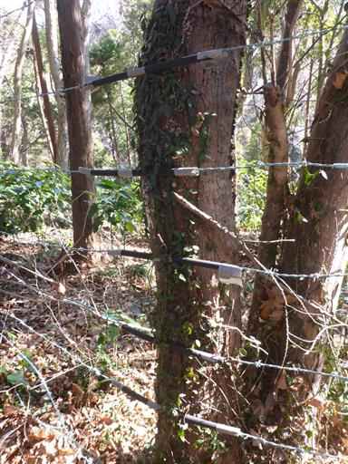
ベンチが並んでいると子供たちは座ってしまう。
まだ歩き始めて1時間程度なので、すぐ先に進む。
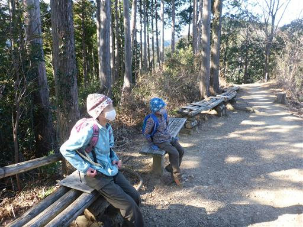
お隣に見える尾根は高尾山の辺りだろうか？
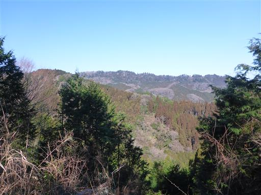
草戸山に到着。標高364m。山之神が祀られている。
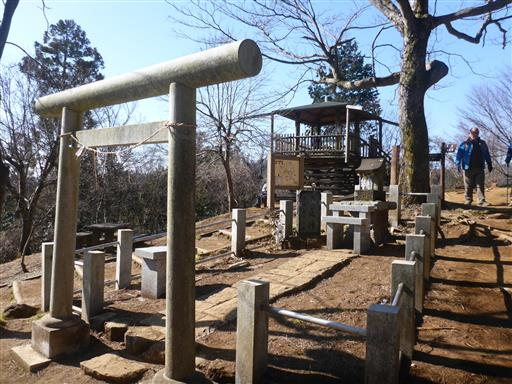
子供達はなぜかこういうのを見学をするのが好きだ。
寺や神社には興味を示さないのに、不思議だ。
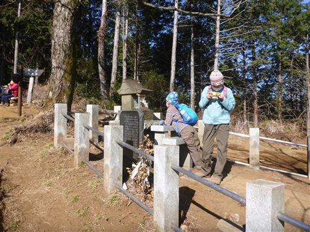
展望台からの展望。ところどころにビルが見える。

草戸山のすぐ先にも東屋がある。
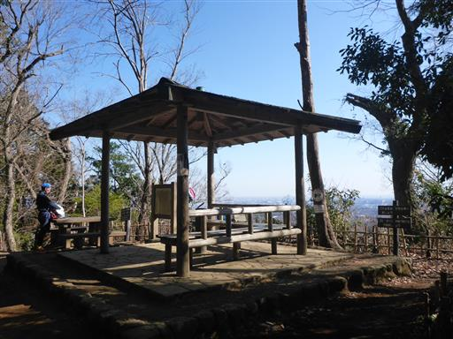
ここからは城山湖が見渡せる。小さなダム湖だ。
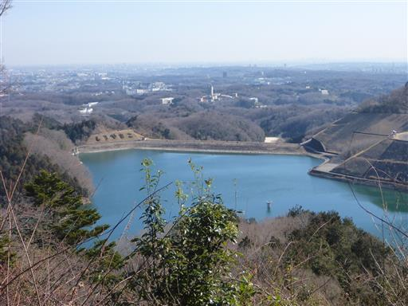
登山道が二手に分かれている。真ん中はだれも歩かないのだろうか？
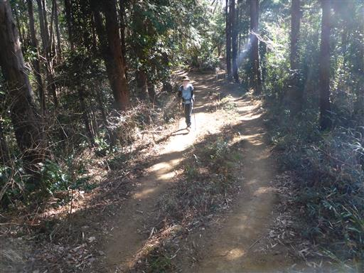
ところどころで尾根道と巻道の分岐がある。
基本的に巻道は通らず、尾根道を選択していく。
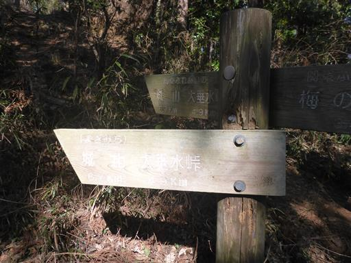
木の彫刻。鷲だろうか？
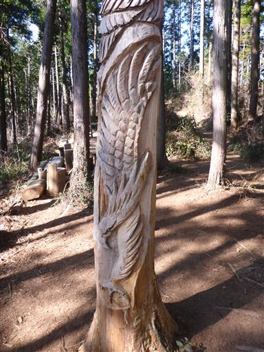
その上はフクロウだ。
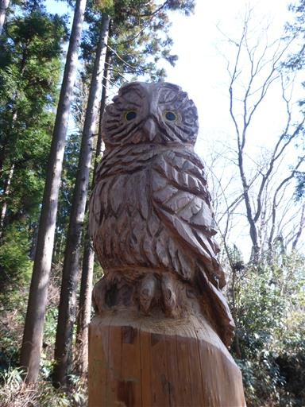
ここからは急斜面階段が続く。そこそこアップダウンのある尾根だ。
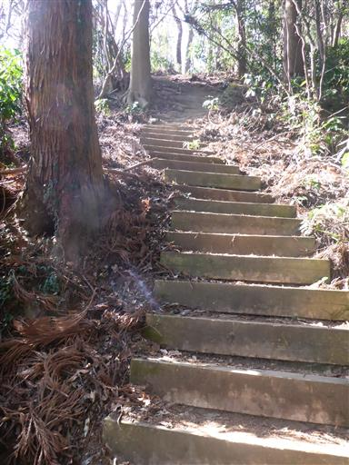
チェーンソーを持ったおじさん。さきほどの作品を作った方で、次の作品を考えているそうだ。
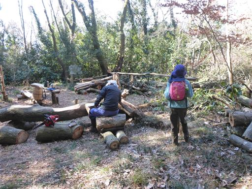
ザック掛け。
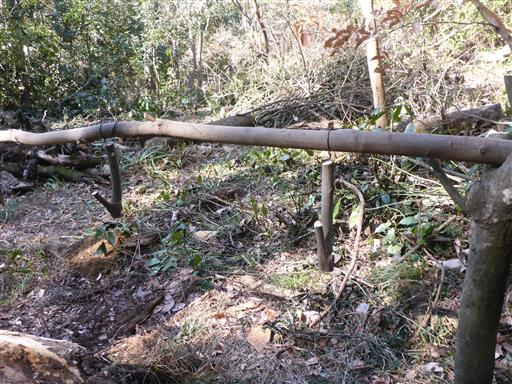
見晴台に到着。
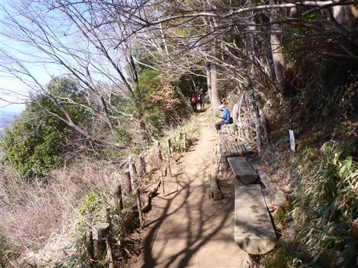
ここからは素晴らしい展望が広がる。本山行一番の展望場所だ。
遠くに富士山の頭が見えている。
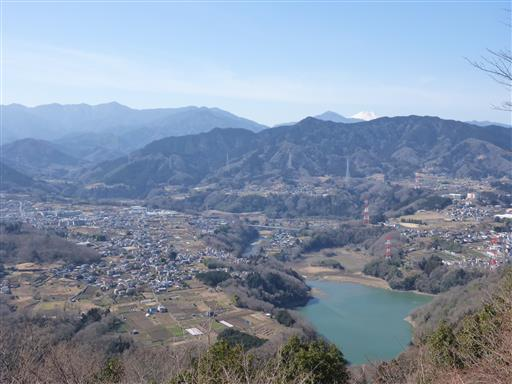
大きな木の幹が巻き合っている。
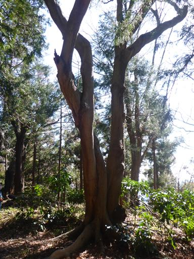
中沢山に到着。標高494m。
13年前と変わらず聖観音菩薩像が立っている。
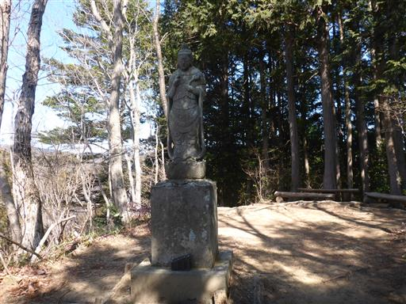
気持ちの良い尾根道が続く。
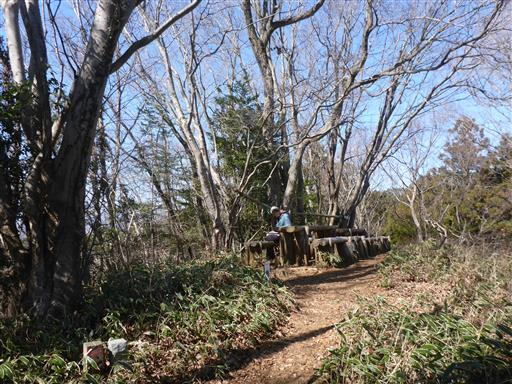
大洞山に到着。標高536m。
冴えない山頂だが、ここで昼食をとる。
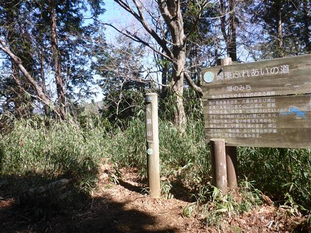
下山開始。すぐに車道が見えてくる。
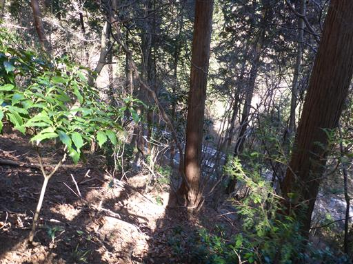
土砂崩れの跡だろうか？何が起こったのかよく分からない跡だ。
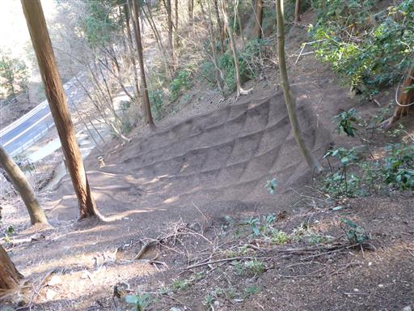
大垂水峠にかかる歩道橋を発見。
山道と山道を繋ぐ歩道橋なんて始めて見た。
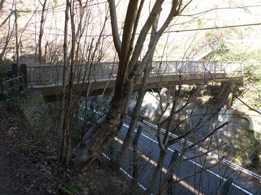
大垂水峠橋を渡る。
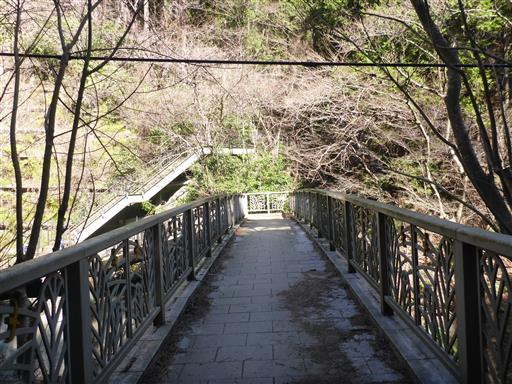
下を走るのは甲州街道だ。
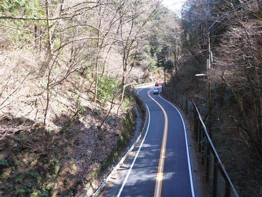
足元にスミレを発見。もうすぐ3月だ。
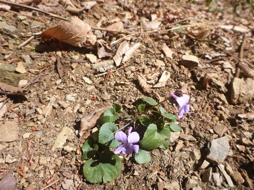
頭だけの地蔵だろうか？
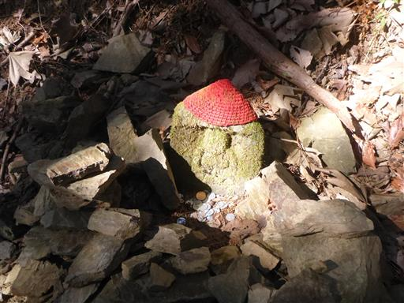
高尾山に向かう１本の登山道が閉鎖されていたため、林道歩きを強いられる。
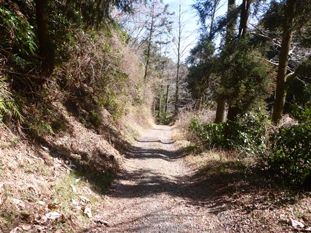
周りは杉の植林地帯なので花粉が多そうだ。
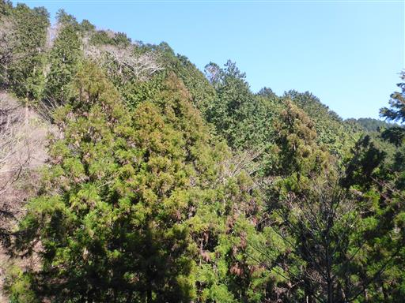
林道は下った後、登りになる。効率の悪い道だ。
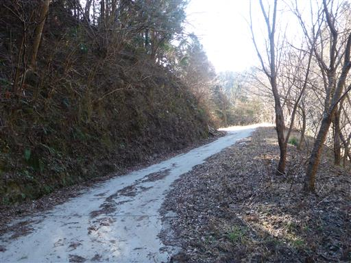
長い長い林道歩きが終わってようやく山道になる。
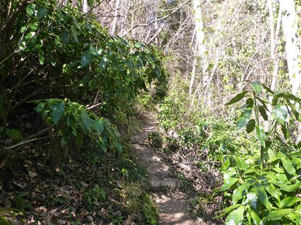
この道も登り。ちょっとうんざりだが、長くは続かない。
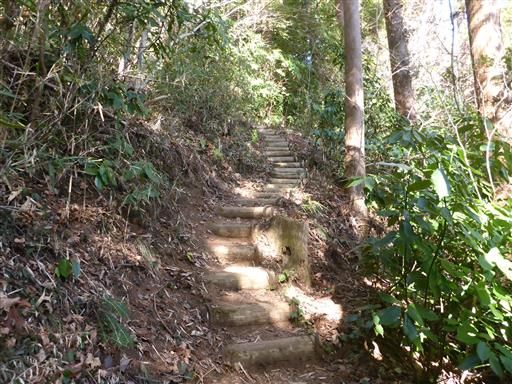
高尾山の稲荷山コースに合流。高尾山は台風の影響であちこち通行止だらけだ。
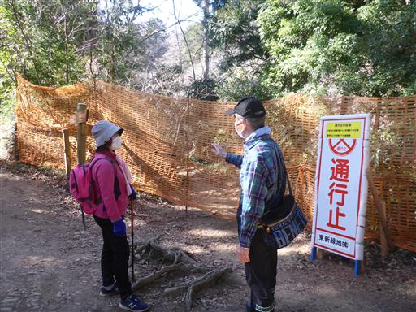
ここからは人通りの多い道。もう14時だが、まだまだ登ってくる人が多い。
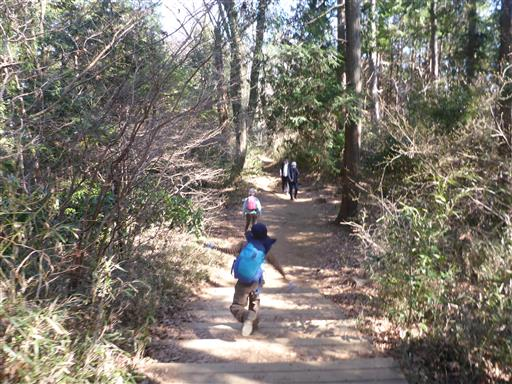
体育座りしている人のように見える木。
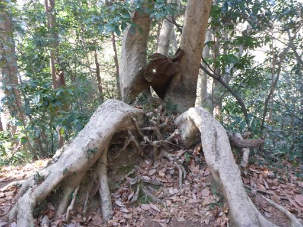
展望台に到着。
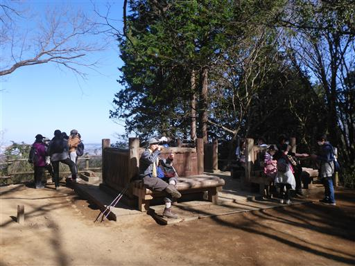
街の風景が見渡せる。高いビルは見えない。
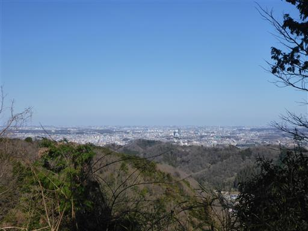
稲荷山に到着。
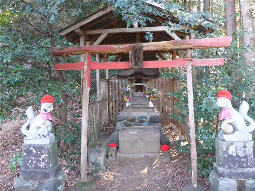
大きな灯篭。天辺の石が側に落ちている。
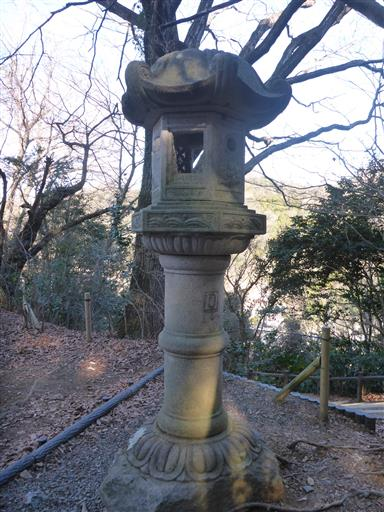
無事下山。
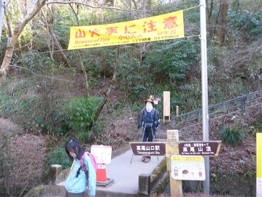
長い山道を歩いたご褒美に、饅頭を購入。
南高尾山稜はよく整備されていて、風景が良く、人もあまり多くなく、良い道だった。
復路は高尾山を経由しようと考えていたが、道の閉鎖などで通過することができず、
長い林道歩きを強いられたのがちょっと残念だった。
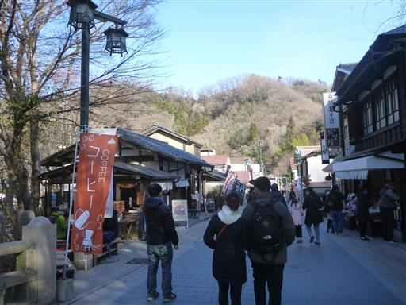